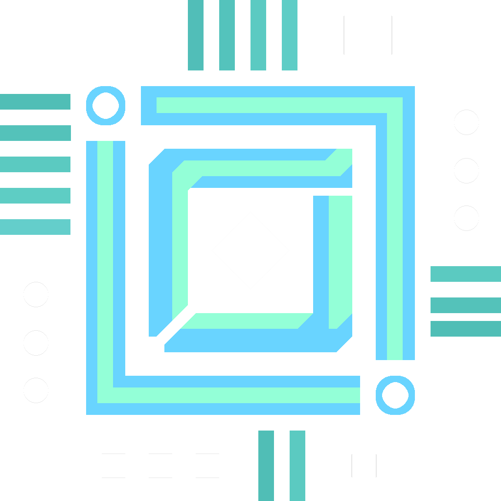

Главная
Нейросеть
Вакансии
О команде
Наша команда создаёт полезную утилиту для рестаранного бизнеса. Нейронная сеть, которая анализирует чеки и даёт рекомендации по улучшению меню
Наша команда состоит из общительных, креативных и умных людей. Помогая друг другу, мы достигаем поставленных задач!
Может именно
ты
нам подходишь
Это именно твоё занятие для
души
 Наша команда состоит из общительных, креативных и умных людей. Помогая
друг другу, мы достигаем поставленных задач!
Наша команда состоит из общительных, креативных и умных людей. Помогая
друг другу, мы достигаем поставленных задач!
 Это именно твоё занятие для души
Это именно твоё занятие для души